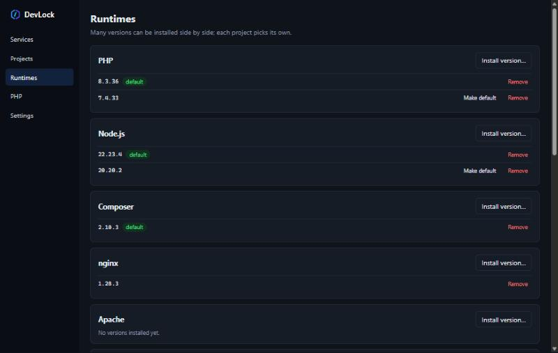

Many versions of PHP, Node, and databases. Running side by side. Picked per project.
DevLock is a local development environment for Windows, an alternative to Laragon,
XAMPP, and WAMP. blog.test runs PHP 7.4 with MySQL 5.7 while
shop.test runs PHP 8.4 with PostgreSQL 18, at the same time.
Per-user installer without admin rights, or a portable zip. MIT / Apache-2.0 license.

Everything a web project needs, without stepping on each other
Each project writes what it needs in a .devlock.toml file. DevLock prepares the
versions, services, domains, and certificates.
Versions side by side
Each PHP version gets its own php-cgi pool; each database + version is an instance with its own port and data.
Automatic domains
Every folder in www becomes name.test, through the hosts file or a *.test wildcard DNS.
Per-project shims
php, composer, node, npm, mysql, psql, and more automatically use the version of the folder you type them in.
Local HTTPS
A DevLock CA, a certificate per site, and an optional HTTP→HTTPS redirect. PHP and Node trust it too.
Complete databases
MySQL, MariaDB, PostgreSQL, and MongoDB, plus Redis or Garnet as a cache. Create, dump, and restore databases from the CLI or GUI.
Node dev servers
dev = "npm run dev": the dev server runs as a service, its port is detected automatically, and the domain points to it.
Email & DB panel
Mailpit catches every email at mail.test; Adminer at adminer.test already knows your database instances.
Share publicly
devlock share blog exposes a site through a Cloudflare Quick Tunnel until you press Ctrl+C.
One small file per project
PHP, Node, database, cache, web server, and HTTPS settings live in the project folder, so they are committed and identical on every teammate's machine.
# www\shop\.devlock.toml php = "8.3" database = "mysql@8.4" cache = "redis@8" dev = "npm run dev" # Vite runs next to PHP https = true
Versions are also read from files you already use: composer.json,
.nvmrc, go.mod, .python-version, and
.java-version.


Runtimes from official sources, verified
Every runtime is downloaded straight from its publisher and checksum-verified before it is installed: php.net, nodejs.org, nginx.org, mariadb.org, mysql.com, postgresql.org, go.dev, Adoptium, MongoDB, and official GitHub releases.
| Category | Available |
|---|---|
| Languages | PHP, Node.js, Composer, Go, Python, Java (Temurin) |
| Web servers | nginx, Apache (per project, for .htaccess) |
| Databases | MySQL, MariaDB, PostgreSQL, MongoDB |
| Cache | Redis, Garnet |
| Tools | Adminer, Mailpit, cloudflared, Xdebug |
Up and running in five minutes
Example for a Laravel project. Every step is also available in the GUI.
- Install DevLockRun the installer from the Releases page, then open a new terminal.
devlock path add # put php/composer/node shims on PATH - Install the runtimes you need
devlock install php 8.3 devlock install composer devlock install nginx devlock install mysql 8.4 devlock install node 22
- Create a project
devlock new laravel shop --php 8.3 --db mysql@8.4
- Start
devlock start # nginx, PHP 8.3, MySQL 8.4 → http://shop.test
Full steps, Node projects, WordPress, HTTPS, and troubleshooting are in the guide.
Compared with other tools
| DevLock | Laragon | XAMPP | |
|---|---|---|---|
| Several PHP versions active at once | Yes | One active | One |
| Several database versions at once | Yes | One active | One |
| Version picked per project (file in the project) | Yes | No | No |
| Node dev server as a service | Yes | No | No |
| Open source | MIT / Apache-2.0 | No | Yes |
Already using Laragon or XAMPP? devlock import brings projects over from
www/htdocs without copying files.
Try DevLock now
Portable, no telemetry, and every service listens on 127.0.0.1 only.
Download the latest release